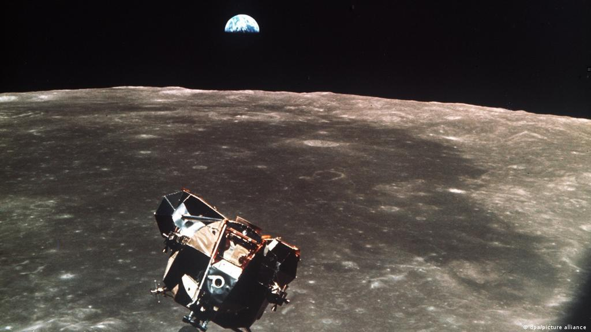
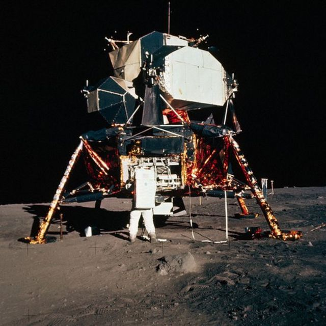
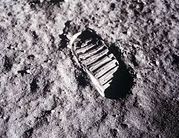
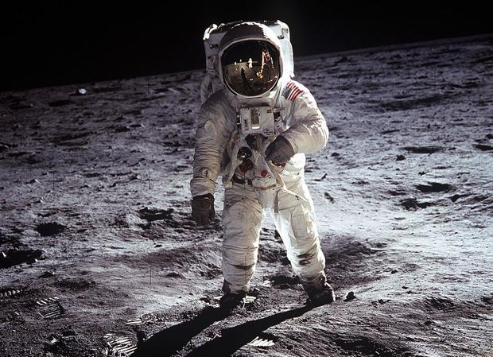
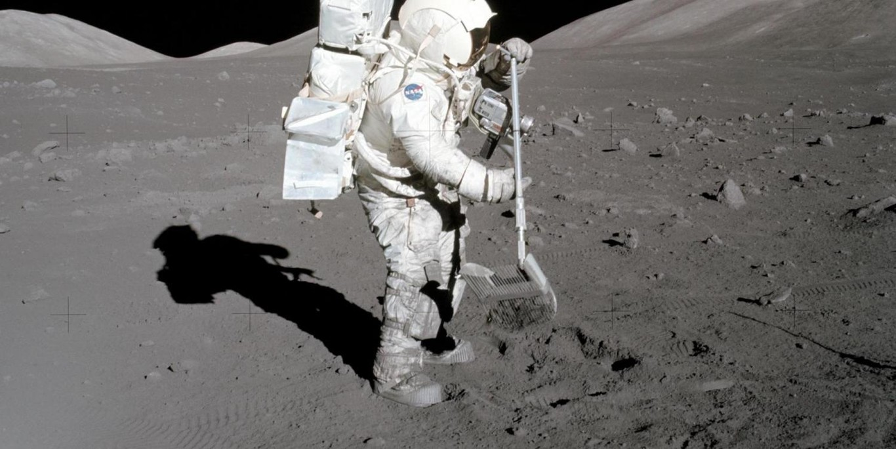
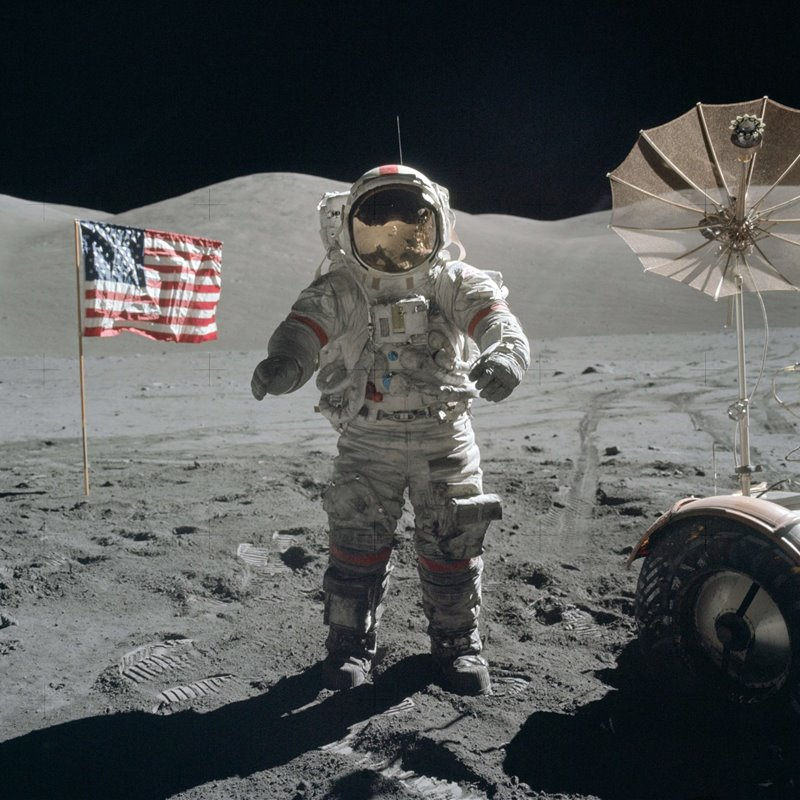
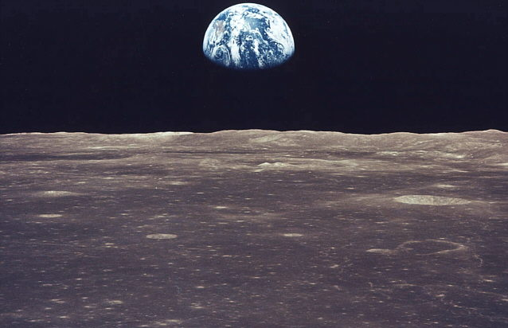
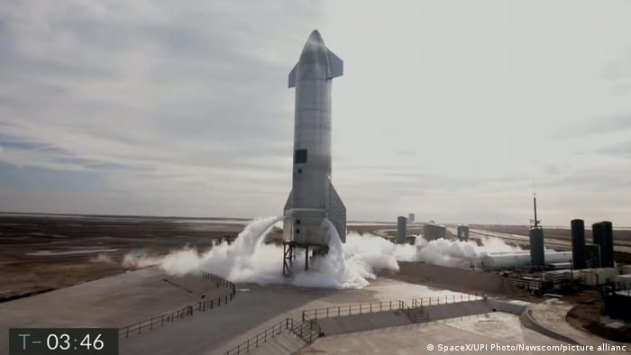
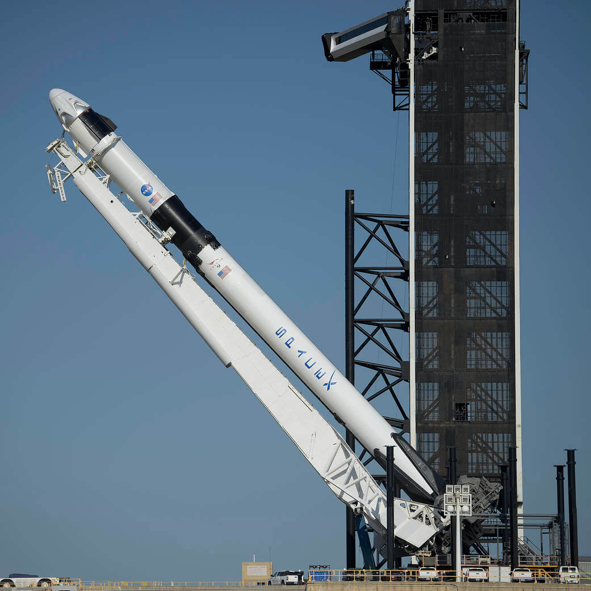
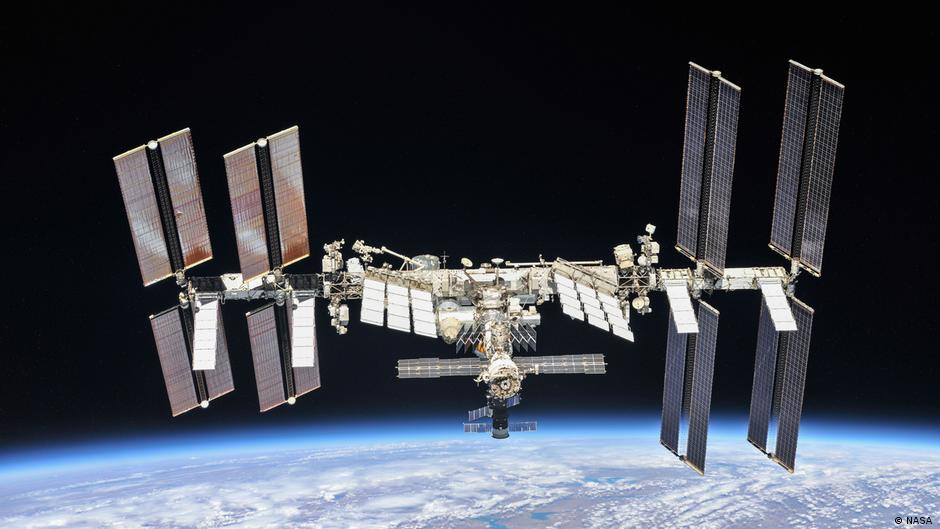

Esta página trata acerca de una de las conquistas mas apasionantes del ser humano, quiza tan importante como cuando Cortés conquisto el nuevo mundo, estamos hablando de la conquista de la Luna.
|
|
En los años 60´s el hombre llego a la luna utilizando tecnologias que hoy en dia serian un tanto rudimentarias |
|---|
|  | Antes de alunizar, los astronautas tuvieron que rondar alrededor de la luna, experiencia que segun comentarios de estos, fue peligrosa pero inolvidable |
|---|
|  | Todo el mundo estuvo a la espectativa para ver por la television el momento en que el hombre pisaria la superficie de la luna por primera vez |
|---|
|  | Esta es una de las fotografias mas difundidas en la historia del hombre, es la primera huella del hombre en la luna |
|---|
|  | En esta mision hubo mucha actividad cientifica en la superficie lunar |
|---|---|
|  |  |
|  | Asi se ve la Tierra desde la luna, esta es quiza una de las vistas mas bellas de nuestra casa |
|---|

|
 |  |
|---|---|---|
|  | Con la tecnologia moderna, hemos podido conquistar el espacio y hasta vivir en el. |

|